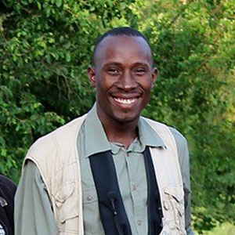
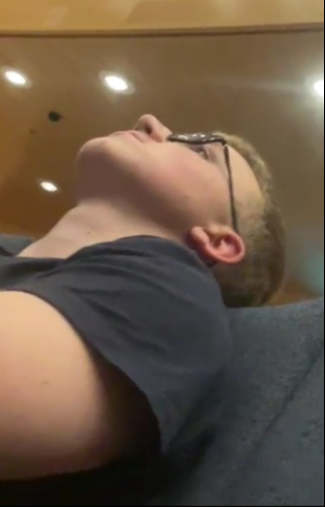
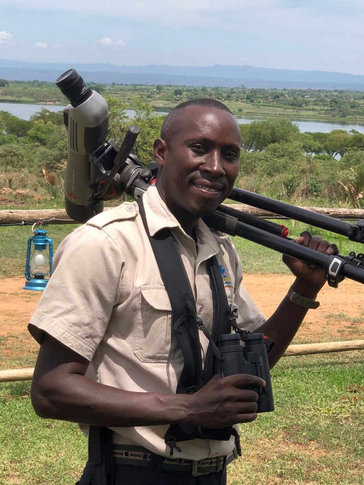

Medverkare

Paul
Paul är en viktig del av AetherNet och bidrar med både idéer, driv och kreativt tänkande. Han har ett starkt intresse för teknik och tycker om att utforska hur digitala lösningar kan användas för att skapa något modernt och inspirerande. Med sitt engagemang hjälper han projektet att utvecklas och förvandlar idéer till verklighet.

Jakob
Jakob är en av medverkarna bakom AetherNet och bidrar med fokus, struktur och nya perspektiv. Han har ett intresse för utveckling och problemlösning, och spelar en viktig roll i att föra projektet framåt. Genom sitt arbete hjälper han till att skapa en stabil grund för sidan och dess innehåll.

Paul Tamwenya
Paul Tamwenya är en del av teamet bakom AetherNet och bidrar med engagemang, idéer och en vilja att skapa något unikt. Han är med och formar projektets identitet och hjälper till att ge sidan både personlighet och riktning. Hans insats är en viktig del av helheten och av visionen bakom AetherNet.